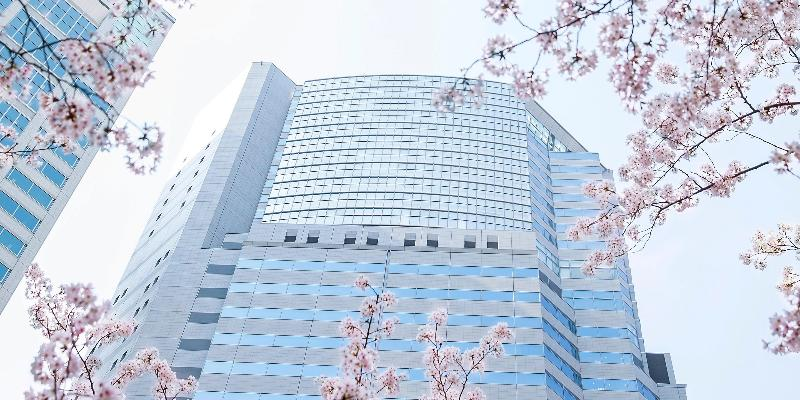
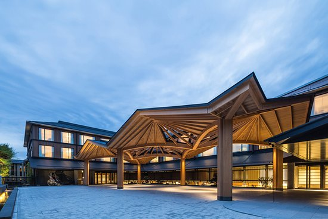
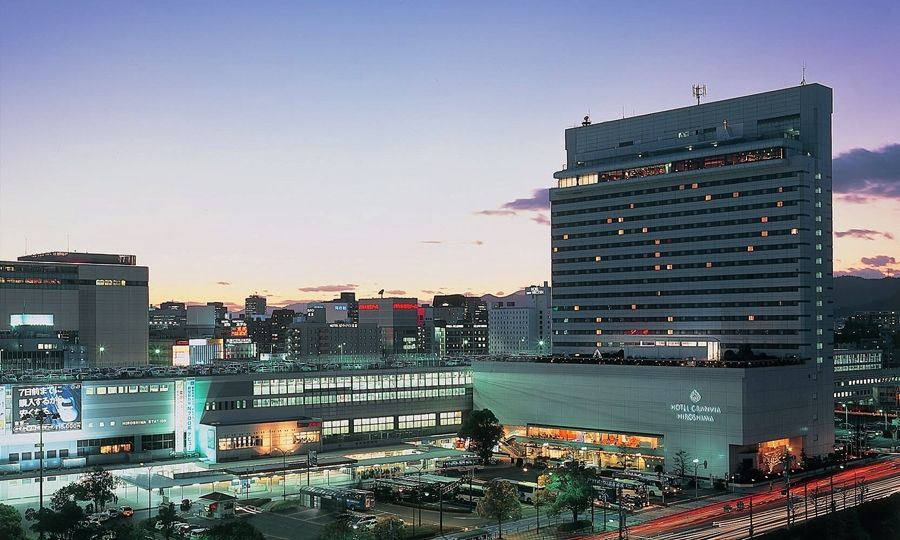
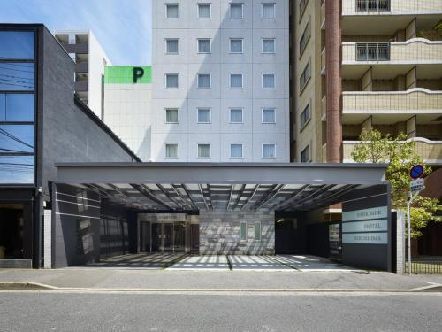
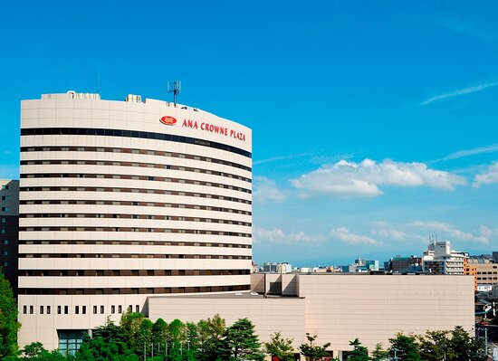

Hoteles
Los más populares
The Park Front Hotel at Universal Studios Japan
- Rango de precios: $2,067 - $6,619 MXN
- Ubicación: 6-2-52 Shimaya, Konohana-Ku, Osaka 554-0024 Prefectura de Osaka.
- Descripción: Para que te sientas como en casa, las habitaciones en el hotel incluyen televisor de pantalla plana, aire acondicionado y frigorífico, y mantenerte conectado es fácil, ya que hay wifi gratuito disponible.
- Calificación: 4.5/5
- Más información
Hotel Tavinos Hamamatsucho
- Rango de precios: $469 – $785 MXN
- Ubicación: 1-13-3 Kaigan, Minato 105-0022 Prefectura de Tokio.
- Descripción: Situado en Tokio, a 2 km de la Torre de Tokio, ofrece habitaciones con aire acondicionado y conexión WiFi-gratuita. Este hotel de 3 estrellas ofrece consigna de equipaje. Este establecimiento para no fumadores está situado a 4,1 km de Roppongi Hills.
Los alojamientos están equipados con TV y secador de pelo. El servicio de limpieza diario está disponible por un suplemento.
- Calificación: 4.5/5
- Más información
Hotel Universal Port
- Rango de precios: $1,007 – $1,983 MXN
- Ubicación: 1-1-111 Sakurajima, Konohana-Ku, Osaka 554-0031 Prefectura de Osaka.
- Descripción: Hotel Universal Port es un hotel para familias con televisor de pantalla plana, aire acondicionado y frigorífico en las habitaciones, y es fácil permanecer conectado durante la estancia, ya que ofrece wifi gratuito para los huéspedes. El hotel tiene conserje y servicio de habitaciones. Además, los huéspedes pueden disfrutar de jacuzzi y desayuno, lo que lo ha convertido en una opción popular entre los viajeros que visitan Konohana.
- Calificación: 4.5/5
- Más información
Slash Kawasaki
- Rango de precios: $1,278 - $2,500 MXN
- Ubicación: 2-9-7 Isago, Kawasaki-ku, Kawasaki 210-0006 Prefectura de Kanagawa.
- Descripción: El Slash Kawasaki, situado en Kawasaki, a 7 km del centro comercial Grandtree Musashikosugi, ofrece alojamiento con aire acondicionado y bar. Además, cuenta con restaurante, cocina compartida, servicio de habitaciones y WiFi gratuita en todas las instalaciones. El establecimiento se halla a 12 km del parque Higashiyamata y a 13 km del parque Yamada Fuji.
- Calificación: 4.5/5
- Más información
Hotel Aqua Citta by WBF
- Rango de precios: $911 - $1,377 MXN
- Ubicación: 3-2-20 Maejima, Naha 900-0016 Okinawa Prefecture.
- Descripción: Para aquellos que estén interesados en visitar puntos de referencia conocidos durante su viaje a Naha, Hotel Aqua Citta Naha by WBF se encuentra cerca de Heiwadori (0,8 km) y Shijo Hondori (0,8 km).
Las habitaciones incluyen aire acondicionado y frigorífico, y es posible permanecer conectado, ya que hay wifi gratuito disponible, para que disfrutes de tu descanso con comodidad.
- Calificación: 4.5/5
- Más información
Hotel Metropolitan Tokyo Ikebukuro
- Rango de precios: $813 - $1,082 MXN
- Ubicación: 1-6-1 Nishiikebukuro, Toshima 171-8505 Prefectura de Tokio.
- Descripción: Bienvenido a Hotel Metropolitan Tokyo Ikebukuro, tu segundo hogar en Toshima. Hotel Metropolitan Tokyo Ikebukuro tiene como objetivo conseguir que tu visita sea lo más relajante y agradable posible, razón por la que tantos huéspedes siguen volviendo año tras año. Para aquellos que estén interesados en visitar puntos de referencia conocidos durante su viaje a Toshima, Crowne Plaza Metropolitan se encuentra cerca de Ikefukurou Statue (0,4 km) y Sunshine 60 Dori (0,7 km).
- Calificación: 4.0/5
- Más información
Vessel Hotel Ishigaki Island
- Rango de precios: $762 - $1,469 MXN
- Ubicación: 1-2-7 Hamasakicho, Ishigaki 907-0013 Okinawa Prefecture.
- Descripción: Las habitaciones de Vessel Hotel Ishigaki Island ofrecen televisor de pantalla plana, aire acondicionado y frigorífico, y los huéspedes pueden estar conectados con wifi gratuito.
También puedes disfrutar de desayuno incluido mientras estás alojado en Sleep Inn Ishigaki. ¿Necesitas un sitio donde aparcar? Hay parking gratis disponible en Sleep Inn Ishigaki.
- Calificación: 4.5/5
- Más información
Shibuya Excel Hotel Tokyu

- Rango de precios: $1,198 - $5,600 MXN
- Ubicación: 1-12-2 Dogenzaka, Shibuya 150-0043 Prefectura de Tokio. /li>
- Descripción: Shibuya Excel Hotel Tokyu es una magnífica elección para viajeros que vayan a Shibuya, ya que ofrece un ambiente para familias además de numerosos servicios diseñados para mejorar su estancia.
Para que te sientas como en casa, las habitaciones en el hotel incluyen televisor de pantalla plana, aire acondicionado y frigorífico, y mantenerte conectado es fácil, ya que hay wifi gratuito disponible.
- Calificación: 4.0/5
- Más información
Yokohama Royal Park Hotel
- Rango de precios: $1,561 - $2,101 MXN
- Ubicación: 2-2-1-3, Minatomirai, Nishi, Yokohama 220-8173 Prefectura de Kanagawa.
- Descripción: Disfrutarás de agradables habitaciones que incluyen televisor de pantalla plana, aire acondicionado y frigorífico, y podrás estar conectado durante tu estancia, ya que Yokohama Royal Park Hotel ofrece wifi gratuito a los huéspedes.
El hotel tiene conserje y servicio de habitaciones. Además, Yokohama Royal Park Hotel ofrece piscina y bar para poder relajarte tras un ajetreado día. Hay aparcamiento disponible para huéspedes con coche.
- Calificación: 4.5/5
- Más información
Hotel Resol Trinity Kyoto
- Rango de precios: $1,471 – $4,000 MXN
- Ubicación: 249 Kamihakusancho, Nakagyo-Ku, Kioto 604-0943 Prefectura de Kioto.
- Descripción: km del Museo Internacional del Manga de Kioto y a 18 minutos a pie del espectáculo Samurai Kembu de Kioto, y cuenta con restaurante, bar, jardín y WiFi gratuita. Además, se halla a 2,1 km del santuario Heian, a 2,3 km del templo Shoren-in y a 2,4 km del castillo Nijo. Este hotel cuenta con centro de spa y consigna de equipaje.
Las habitaciones disponen de aire acondicionado, TV de pantalla plana con canales vía satélite, nevera, hervidor de agua, bidet, secador de pelo y escritorio. Hay baño compartido con ducha y artículos de aseo gratuitos. Las habitaciones del hotel tienen armario y baño privado.
- Calificación: 4.5/5
- Más información
Hoteles por ciudad
Tokio
The Strings by InterContinental Tokyo

- Rango de precios: $3,461 - $4,944 MXN
- Ubicación: : 2-16-1 Konan 26 - 32F Shinagawa East One Tower, Minato 108-8282 Prefectura de Tokio.
- Descripción: The Strings by InterContinental Tokyo es una magnífica elección para viajeros que vayan a Minato, ya que ofrece un ambiente de lujo además de numerosos servicios diseñados para mejorar su estancia.
- Calificación: 5 estrellas
- Más información
InterContinental Tokyo Bay
- Rango de precios: $2,759 - $3,334 MXN
- Ubicación: : 1-16-2 Kaigan, Minato 105-8576 Prefectura de Tokio.
- Descripción: Con presencia en más de 60 países en el mundo entero, el complejo hotelero InterContinental Hotels&Resorts continúa con la tradición y ofrece una hospitalidad de alta calidad para todo el mundo.
- Calificación: 5 estrellas
- Más información
Mitsui Garden Hotel Ginza Premier
- Rango de precios: $1,168 - $3,024 MXN
- Ubicación: 8-13-1, Ginza, Chūō 104-0061 Prefectura de Tokio.
- Descripción: Para aquellos que visiten Chūō, Mitsui Garden Hotel Ginza Premier es una magnífica elección para descansar. Conocido por su ambiente de moda y su proximidad a fantásticos restaurantes y atracciones, Mitsui Garden Hotel Ginza Premier te ayuda a disfrutar de lo mejor de Chūō.
- Calificación: 4 estrellas
- Más información
JR Kyushu Hotel Blossom Shinjuku
- Rango de precios: $644 - $2,773 MXN
- Ubicación: 2-6-2, Yoyogi, Shibuya 460-0003 Prefectura de Tokio.
- Descripción: Para aquellos que visiten Shibuya, JR Kyushu Hotel Blossom Shinjuku es una magnífica elección para descansar. Conocido por su ambiente para familias y su proximidad a fantásticos restaurantes y atracciones, JR Kyushu Hotel Blossom Shinjuku te ayuda a disfrutar de lo mejor de Shibuya.
- Calificación: 4 estrellas
- Más información
Osaka
InterContinental Hotel Osaka
- Rango de precios: $4,674 - $7,286 MXN
- Ubicación: 3-60 Ofukacho, Kita-ku, Osaka 530-0011 Prefectura de Osaka.
- Descripción: Todo el mundo necesita un sitio donde reposar cuando está cansado. Para aquellos que visiten Osaka, Intercontinental Hotel Osaka es una magnífica elección para descansar.
- Calificación: 5 estrellas
- Más información
Hilton Osaka

- Rango de precios: $3,567 - $4,547
- Ubicación: 1-8-8 Umeda, Kita-ku, Osaka 530-0001 Prefectura de Osaka.
- Descripción: La combinación ideal de calidad, comodidad y ubicación, ofrece un ambiente de lujo con una amplia variedad de servicios diseñados para viajeros como tú.
- Calificación: 5 estrellas
- Más información
Hotel Universal Port
- Rango de precios: $941 - $1,785
- Ubicación: 1-1-111 Sakurajima, Konohana-Ku, Osaka 554-0031 Prefectura de Osaka.
- Descripción: ¿Buscas donde alojarte en Konohana? Entonces no te pierdas Hotel Universal Port, un hotel para familias que te acerca a lo mejor de Konohana.
- Calificación: 4 estrellas
- Más información
Hotel Keihan Universal Tower
- Rango de precios: $1,075 - $2,335 MXN
- Ubicación: 6-2-45 Shimaya, Konohana-Ku, Osaka 554-0024 Prefectura de Osaka.
- Descripción: Descubre por qué tantos viajeros ven Hotel Keihan Universal Tower como el hotel ideal cuando visitan Konohana. Además de aportar la combinación ideal de calidad, comodidad y ubicación, ofrece un ambiente romántico con una amplia variedad de servicios diseñados para viajeros como tú.
- Calificación: 4 estrellas
- Más información
Kyoto
Suiran Luxury Collection Hotel Kyoto
- Rango de precios: $11,271 - $17,426 MXN
- Ubicación: 12 Susukinobabacho, Saga-Tenryuji, Ukyo-Ku, Kioto 616-8385 Prefectura de Kioto.
- Descripción: Si buscas un hotel romántico en Kioto, no te pierdas Suiran Luxury Collection Hotel Kyoto.
- Calificación: 5 estrellas
- Más información
Four Seasons Hotel Kyoto

- Rango de precios: $11,422 - $13,827
- Ubicación: 445-3 Myohoin Maekawa-Cho, Higashiyama-Ku, Kioto 605-0932 Prefectura de Kioto.
- Descripción: Four Seasons Hotel Kyoto es una magnífica elección para viajeros que vayan a Higashiyama, ya que ofrece un ambiente de lujo además de numerosos servicios diseñados para mejorar su estancia.
- Calificación: 5 estrellas
- Más información
ANA Crowne Plaza Kyoto
- Rango de precios: $1,133 - $2,562 MXN
- Ubicación: Nijojo-mae, Horikawa-dori, Nakagyo-ku, Kioto 604-0055 Prefectura de Kioto.
- Descripción: ¿Buscas donde alojarte en Kioto? Entonces no te pierdas ANA Crowne Plaza Kyoto, un hotel para familias que te acerca a lo mejor de Kioto.
- Calificación: 4 estrellas
- Más información
RIHGA Royal Hotel Kyoto
- Rango de precios: $1,112 - $2,686 MXN
- Ubicación: 1 Taimatsu-Cho, Shiokojisagaru, Higashihorikawadori, Shimogyo-Ku, Kioto 600-8237 Prefectura de Kioto.
- Descripción: La búsqueda del hotel para familias ideal en Shimogyo no tiene por qué ser difícil. Bienvenido a RIHGA Royal Hotel Kyoto, una fantástica opción para viajeros como tú.
- Calificación: 4 estrellas
- Más información
Hiroshima
Hotel Granvia Hiroshima

- Rango de precios: $1,055 - $2,433 MXN
- Ubicación: 1-5 Matsubaracho, Minami-Ku, Hiroshima 732-0822 Prefectura de Hiroshima.
- Descripción: Si buscas un hotel para familias en Hiroshima, no te pierdas Hotel Granvia Hiroshima.
- Calificación: 4 estrellas
- Más información
RIHGA Royal Hotel Hiroshima
- Rango de precios: $840 - $2,849 MXN
- Ubicación: 6-78 Motomachi, Naka-Ku, Hiroshima 730-0011 Prefectura de Hiroshima.
- Descripción: Para aquellos que visiten Hiroshima, RIHGA Royal Hotel Hiroshima es una magnífica elección para descansar. Conocido por su ambiente para familias y su proximidad a fantásticos restaurantes y atracciones, RIHGA Royal Hotel Hiroshima te ayuda a disfrutar de lo mejor de Hiroshima.
- Calificación: 4 estrellas
- Más información
Daiwa Roynet Hotel Hiroshima Ekimae
- Rango de precios: $1,390 - $3,138 MXN
- Ubicación: 3-5-7 Futabanosato, Higashi-ku, Hiroshima 732-0057 Prefectura de Hiroshima.
- Descripción: : El hotel ideal con restaurantes y atracciones cercanas.
- Calificación: 4 estrellas
- Más información
Hotel Park Side Hiroshima Peacepark

- Rango de precios: $636 - $1,024 MXN
- Ubicación: 2-6-24 Otemachi, Naka-Ku, Hiroshima 730-0051 Prefectura de Hiroshima.
- Descripción: La búsqueda del hotel ideal en Hiroshima no tiene por qué ser complicada. Bienvenido a Hotel Park Side Hiroshima Peacepark, una fantástica opción para viajeros como tú.
- Calificación: 3 estrellas
- Más información
Yokohama
The Yokohama Bay Hotel Tokyu
- Rango de precios: $2,082 - $4,057 MXN
- Ubicación: 2-3-7, Minatomirai, Nishi, Yokohama 220-8543 Prefectura de Kanagawa.
- Descripción: La búsqueda del hotel de lujo ideal en Nishi no tiene por qué ser difícil. Bienvenido a The Yokohama Bay Hotel Tokyu, una fantástica opción para viajeros como tú.
- Calificación: 5 estrellas
- Más información
InterContinental Yokohama Grand
- Rango de precios: $1,733 - $4,095 MXN
- Ubicación: 1-1-1 Minatomirai Nishi-Ku, Minatomirai, Nishi, Yokohama 220-8522 Prefectura de Kanagawa.
- Descripción: La búsqueda del hotel de lujo ideal en Minatomirai no tiene por qué ser difícil. Bienvenido a InterContinental Yokohama Grand, una fantástica opción para viajeros como tú.
- Calificación: 5 estrellas
- Más información
Hotel New Grand
- Rango de precios: $1,087 - $3,979 MXN
- Ubicación: 10 Yamashiracho, Naka-ku, Yokohama 231-8520 Prefectura de Kanagawa.
- Descripción: ¿Buscas donde alojarte en Yokohama? Entonces no te pierdas Hotel New Grand, un hotel romántico que te acerca a lo mejor de Yokohama.
- Calificación: 4 estrellas
- Más información
Hotel Associa Shin-Yokohama
- Rango de precios: $1,381 - $3,223 MXN
- Ubicación: 2-100-45 Shin Yokohama, Kohoku-Ku, Yokohama 222-0033 Prefectura de Kanagawa.
- Descripción: Hotel Associa Shin-Yokohama es una magnífica elección para viajeros que vayan a Kohoku, ya que ofrece un ambiente con encanto además de numerosos servicios diseñados para mejorar su estancia.
- Calificación: 4 estrellas
- Más información
Niigata
Hotel Nikko Niigata
- Rango de precios: $1,045 MXN
- Ubicación: 5-1 Bandaijima, Chuo-ku, Niigata 950-0078 Prefectura de Niigata.
- Descripción: La búsqueda del hotel romántico ideal en Niigata no tiene por qué ser complicada. Bienvenido a Hotel Nikko Niigata, una fantástica opción para viajeros como tú.
- Calificación: 4 estrellas
- Más información
Dormy Inn Niigata
- Rango de precios: $897 - $2,642 MXN
- Ubicación: 1-7-14 Akashi, Chuo-ku, Niigata 950-0084 Prefectura de Niigata.
- Descripción: Durante su estancia en Dormy Inn Niigata, los huéspedes pueden visitar Hakusan Park (2,2 km) y Hakusan Shrine (2,3 km), que son algunas de las principales atracciones de Niigata.
- Calificación: 4 estrellas
- Más información
Hotel Okura Niigata

- Rango de precios: $1,101 - $2,569 MXN
- Ubicación: 6-53 Kawabatacho, Chuo-ku, Niigata 951-8053 Prefectura de Niigata.
- Descripción: Descubre por qué tantos viajeros ven Hotel Okura Niigata como el hotel ideal cuando visitan Niigata. Además de aportar la combinación ideal de calidad, comodidad y ubicación, ofrece un ambiente para familias con una amplia variedad de servicios diseñados para viajeros como tú.
- Calificación: 4 estrellas
- Más información
Hotel ANA Crowne Plaza Niigata

- Rango de precios: $1,794 - $2,899 MXN
- Ubicación: 5-11-20 Bandai, Chuo-ku, Niigata 950-8531 Prefectura de Niigata.
- Descripción: : ¿Buscas donde alojarte en Niigata? Entonces no te pierdas ANA Crowne Plaza Niigata, un hotel para familias que te acerca a lo mejor de Niigata.
- Calificación: 4 estrellas
- Más información